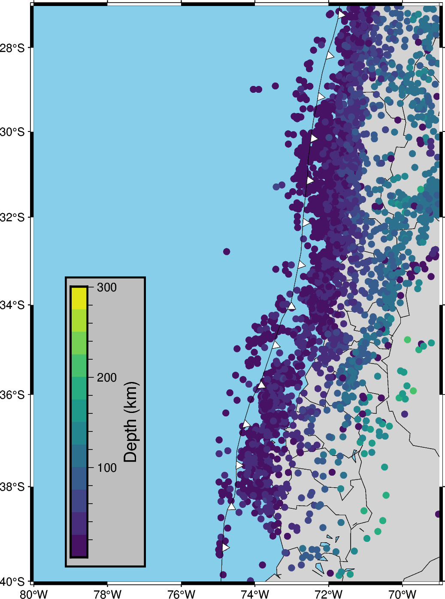

Note
Go to the end to download the full example code
Seismicity Chile 2011-2024
Draw a GmtrFigure for the seismicity in Chile .
coast [WARNING]: Option -D: Unknown modifier 1 [Defaults to -Dl]
plot [WARNING]: Cannot use auto-legend -l for variable symbol color. Option -l ignored.
from obspy import read_events
import requests
import pandas as pd
from datetime import datetime
import pygmt
import matplotlib as plt
import geostochpy
# Definir la URL "de la API del USGS
url = 'https://earthquake.usgs.gov/fdsnws/event/1/query'
# Parámetros de la consulta con coordenadas para Chile
params = {
'format': 'geojson',
'starttime': '2011-01-01',
'endtime': '2024-01-01',
'minlatitude': -56.0,
'maxlatitude': -17.5,
'minlongitude': -75.0,
'maxlongitude': -66.0,
'minmagnitude': 4.0,
'orderby': 'time',
}
# Realizar la solicitud GET a la API del USGS
response = requests.get(url, params=params)
data = response.json()
# Extraer información relevante de los sismos
earthquakes = []
for event in data['features']:
date = datetime.utcfromtimestamp(event['properties']['time'] / 1000.0)
magnitude = event['properties']['mag']
depth = event['geometry']['coordinates'][2]
latitude = event['geometry']['coordinates'][1]
longitude = event['geometry']['coordinates'][0]
earthquakes.append({
'Fecha': date,
'Magnitud': magnitude,
'Profundidad': depth,
'Latitud': latitude,
'Longitud': longitude,
})
# Crear un DataFrame con los datos y guardar en un archivo CSV
df = pd.DataFrame(earthquakes)
df.to_csv('sismos_chile.csv', index=False)
df = pd.read_csv('sismos_chile.csv', parse_dates=['Fecha'])
# Cargar datos desde el archivo CSV
df = pd.read_csv('sismos_chile.csv', parse_dates=['Fecha'])
# Crear un objeto de figura de PyGMT
# Crear un objeto de figura de PyGMT
fig = pygmt.Figure()
# Configurar el marco del mapa
fig.basemap(region=[-80, -69, -40, -27], projection='M12c', frame='ag')
fig.coast(shorelines=True, resolution='10m', water='skyblue', land='lightgray', borders=[1,2])
# fig.grdimage(grid='@earth_relief_01m', cmap='geo', shading=True, projection='M6i', frame=True)
# Crear una paleta de colores según la magnitud de los sismos
pygmt.makecpt(cmap="viridis", series=[df['Profundidad'].min(), df['Profundidad'].max(),25],continuous=False)
# Superponer el mapa de relieve del agua con sombreado
# Agregar eventos sísmicos como puntos en el mapa con colores distintos por magnitud
fig.plot(
x=df['Longitud'].to_list(),
y=df['Latitud'].to_list(),
size=0.02 * 2 ** df['Magnitud'],
fill=df['Profundidad'].to_list(),
cmap=True,
style='c0.2c',
label='Sismos en Chile',
)
# add fosa
route_trench = geostochpy.get_data('trench-chile.txt')
lons_fosa, lats_fosa = geostochpy.load_trench(route_trench)
fig.plot(
x=lons_fosa,
y=lats_fosa,
region=[-80, -69, -40, -27],
pen="0.2p",
fill="white",
style="f0.5i/0.1i+r+t+o1")
#
# Configurar etiquetas y título
fig.text(
x=0,
y=0,
text='Magnitud',
font='12p,Helvetica,black',
justify='ML',
)
fig.text(
x=0,
y=-2,
text='Sismos en Chile (2010-2024)',
font='16p,Helvetica-Bold,black',
justify='ML',
)
fig.colorbar(position="g-79/-39.5+w8c/0.5c+v",
box='+ggray+pblack',frame='af+l"Depth (km)"')
# Guardar el mapa como imagen
fig.savefig('mapa_sismos_chile_relieve.png')
# Mostrar el mapa en la ventana si estás ejecutando este código en un entorno interactivo
fig.show()
Total running time of the script: (0 minutes 22.742 seconds)